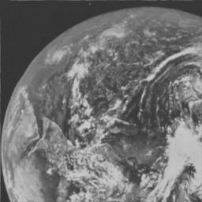

HTMLの講義
ホーム タグリファレンス 問い合わせ
画像の埋め込み

画像ファイルにはいくつかの種類(拡張子)があります。
jpg, jpeg
じぇいぺぐ
一般的な画像形式、圧縮率に優れる。1670万色使える。 非可逆圧縮タイプなので、一度低解像度で保存すると元の画質には戻せない。
png
ぴんぐ、ぴん
可逆圧縮方式なので、画質を変更しても元に戻すことができる。透過処理が使える。jpgと比べるとファイルサイズが大きくなる。
gif
じふ、ぎふ
256色使える。ぱらぱら漫画のよう表現ができる。
動画の埋め込み
動画を再生するには、videoタグをサポートしたブラウザが必要です。
音声、音楽の埋め込み